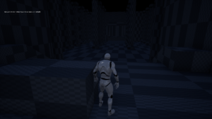
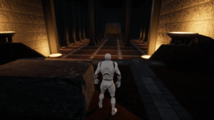
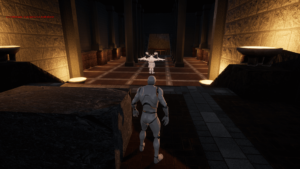

Dark Myth
Dark Myth is a prototype of a level similar to Dark Souls or Nioh game levels fully recreated in Unreal Engine from a One Page Dungeon called “Do it for the Beast”. It was fully developed with all the knowledge acquired on player guidance and level design to achieve a believable world while being challenging for the player and as a released game level. This project was developed by a teammate and me, thinking on the design of the rooms and the different zones in the level, by maintaining the lore of the one page dungeon.
1st Iteration
On the first iteration we set the boundaries of the map and the first initial Idea for the level with the use of blockout. This allowed us to create an aproximation of the size of the map and its different areas. We took lots of references from levels of games like Dark Souls or Nioh which resembled what we wanted to achieve. We needed our level to have big areas that could amuse the player.
2nd Iteration
On this Iteration we spent some time re-doing the big cave which was one of the main areas because the previous iteration we made did not convinced us the huge area and emptyness we created, that’s why we made it a little bit smaller but this time with multiple routes and corridors, making at the end much more interesting to explore. We added all textures to the map so we could have a closer idea on the environment feeling of darkness and mistery. In this iteration we added all player guidance elements like lights, to mark some paths and interesting parts of the map to the player. These lights would be used as candles, torches or fluorescent mushrooms. Also, with the help of the map geometry we could focus the attention of the player on some landmarks to make him know his main objective.
3rd Iteration
On this final Iteration we started adding the final Assets on the map to make the level much alive and interesting. We filled every room and inch of the map with a lot of different objects that could improve the environment story telling while being related to each type of zone, always keeping in mind the player guidance. Also, we added some details like a huge lake in the final zone of the level, a river traversing the furthest zone and some puddles in the cave. With all of these additions we obtained a really good looking level, while at the same time having really balanced zones with different playable capabilities.
Personal Contributions:
Level Design
Level Blockout
LDD development